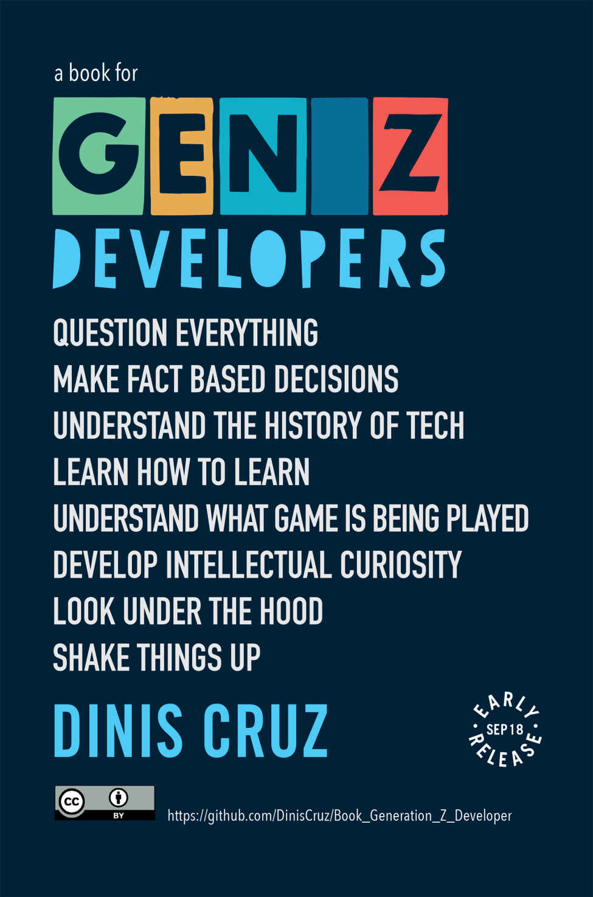

Generation Z Developers v1.0.0 · 2018 · frozen
Key concepts and ideas for the next generation of developers. The first edition as published: the 28 chapters of the print edition (139 pages, 30 September 2018) and the Leanpub build of 8 October 2018. This is the official version this repository holds; nothing in it changes. The versions page records it, and will show the delta to the next one.
28published chapters 31,755words published 139print pages 6drafts 89outlines
Read and review it · on one page · the print PDF · the frozen markdown · the drafts on one page · the map to the newsroom articles
Where the first edition lives: the paperback on Amazon (139 pages, published 30 September 2018, ISBN-10 1724194607) · Leanpub (free to read online, suggested price $10; 60% complete, 465 readers, 30,695 words) · the source on GitHub.
The book as published
status: content, parts by weight, chapters by weight then title. These 28 chapters, in this order, are the print edition's table of contents, with its page numbers. The front matter was a page of GitHub issues to help with.- 1Introduction 3 chapters, from p. 5
Hi Generation Z Developer, if you are one and want to learn as much as you can about your craft, this is the book for you. I decided to write this book after doing a series of presentations to Gen Z audiences. As part of…
- Generation Z p. 7 · 671 words
- How to get a job p. 9 · 732 words
- How this book is being created p. 12 · 146 words
- 2MVP for Gen Z Dev 12 chapters, from p. 13
This section will try to define what should be the MVP for a Generation Z Developer. MVP is a term used regularly in the software development industry to mean Minimum Viable Product, and it represents the minimum set of …
- Creative Commons p. 14 · 1,636 words
- Open Source p. 20 · 2,299 words
- Docker p. 29 · 1,112 words
- Jira p. 33 · 1,144 words
- OWASP p. 38 · 519 words
- Python p. 40 · 571 words
- Slack and ChatOps p. 43 · 2,311 words
- Hugo p. 52 · 795 words
- Google Search, GDD and SRE p. 56 · 1,933 words
- Xcode and Swift p. 62 · 731 words
- Dot Language p. 65 · 2,993 words
- Wallaby and NCrunch p. 79 · 3,699 words
- 3Technologies 7 chapters, from p. 93
- Books p. 93 · 755 words
- Pen and Paper p. 95 · 382 words
- Assembly and Bytecode p. 97 · 530 words
- Brain p. 99 · 748 words
- IDE p. 101 · 349 words
- Machine Learning and AI p. 102 · 391 words
- AST (Abstract Syntax Tree) p. 104 · 1,682 words
- 7Life Patterns 6 chapters, from p. 113
- Learning p. 113 · 938 words
- Be a founder p. 116 · 272 words
- Being criticized is an privilege p. 117 · 2,196 words
- Backup your life p. 128 · 1,007 words
- Talking to yourself digitally p. 131 · 592 words
- The future needs you p. 133 · 621 words
The drafts: what was in the repository but not in the book
- Introduction 1 drafts, 0 outlines
- STEM Tech Stack draft312 words
- MVP for Gen Z Dev 0 drafts, 11 outlines
- TDD (Test-Driven Development) outline318 words
- AWS outline320 words
- Continuous Integration outline79 words
- Electron outline37 words
- GitHub Flow outline30 words
- IOT (Internet of Things) outline228 words
- linux outline138 words
- Minecraft outline13 words
- raspberry-pi outline112 words
- StackOverflow outline59 words
- Wikipedia outline70 words
- Technologies 0 drafts, 10 outlines
- Blockchain outline53 words
- Browser Automation outline82 words
- Dopamine outline184 words
- DSL outline73 words
- Ngrok outline75 words
- Node JS outline62 words
- R (language) outline26 words
- Scratch outline29 words
- Streams outline50 words
- Web Proxies outline25 words
- Concepts 1 drafts, 26 outlines
- Gamification draft127 words
- Agile and Kanban outline159 words
- Amazon Press Release outline26 words
- Change Engineering outline12 words
- Changes outline120 words
- Chaos Engineering outline645 words
- CI Testing outline97 words
- Deadlines outline243 words
- Design outline153 words
- DevOps outline47 words
- Facts outline134 words
- Feedback loops outline130 words
- Functional Programming outline150 words
- GDPR outline38 words
- graphs outline36 words
- Inventing on Principle outline38 words
- Karma Points outline38 words
- Legacy Applications outline68 words
- Micro-Services outline65 words
- Netflix Culture outline69 words
- Pair Programming outline136 words
- Recursive Functions outline31 words
- REPL outline38 words
- Serverless outline219 words
- Spotify Model outline46 words
- SRE (Site Reliability Engineering ) outline44 words
- Strong vs weak types outline34 words
- Your CV 1 drafts, 8 outlines
- leanpub draft103 words
- Personal Brand outline92 words
- Blogs outline202 words
- Future Self outline82 words
- Git outline361 words
- Github outline229 words
- LinkedIn outline39 words
- twitter outline55 words
- Upwork outline87 words
- Security 0 drafts, 8 outlines
- 3rd-party-modules outline392 words
- Bug Bounties outline14 words
- Defcon outline60 words
- Don't touch production outline296 words
- Pointers outline81 words
- Security creates better developers outline30 words
- Strings should be banned outline66 words
- Threat Modeling outline110 words
- Life Patterns 0 drafts, 21 outlines
- Are you a pionner, Settlers or Town Planners outline22 words
- Automate your Workflows outline48 words
- BBS and Modems outline167 words
- Civic Responsibility outline89 words
- Curse of Knowledge outline48 words
- Ideas outline99 words
- Impostor Syndrome outline144 words
- Kind is naked outline105 words
- Learn to Hack outline55 words
- Love Maths outline47 words
- Mentors outline114 words
- Nudge outline33 words
- One way and two way doors outline148 words
- Power of Habits outline203 words
- Publish, Publish Publish outline59 words
- Refactoring outline14 words
- Start with Why outline33 words
- The Zone outline139 words
- Thinking as programmer outline12 words
- Why diversity matters outline280 words
- Workflows outline69 words
- Misc 3 drafts, 5 outlines
Misc topics that need to be moved into a chapter…
- Books to read draft46 words
- Diagrams to add draft15 words
- Generation Z Research draft76 words
- Gen Z digital environment outline54 words
- O2 Platform outline43 words
- Stories to tell outline91 words
- Technium outline51 words
- Wait but why outline27 words